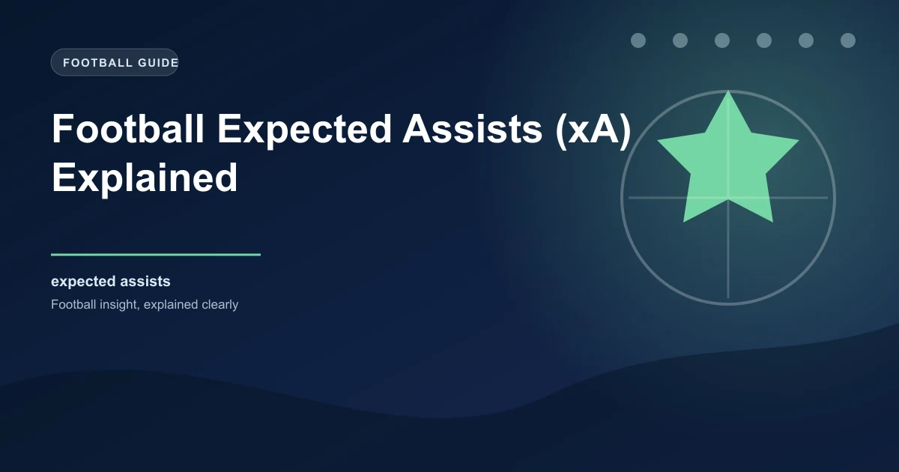

Expected goals (xG) has become one of the most widely used metrics in football analytics. But xG only tells half the story. While xG measures the quality of shots taken, expected assists (xA) measures the quality of the passes that create those shots. Together, xG and xA provide a complete picture of a team's attacking output, and for bettors, xA offers a unique edge in identifying creative quality that raw assist numbers miss.
This guide explains what xA is, how it is calculated, and how you can use it to make better betting decisions.
Expected assists measures the probability that a given pass will lead to a goal. Instead of counting actual assists (which depend on whether the receiver finishes the chance), xA assigns a value to each pass based on the quality of the shot it produces. In other words, xA measures how good the chance was that the passer created, regardless of whether the striker scored.
If a midfielder plays a perfect through ball that creates a one-on-one with the goalkeeper (an xG of 0.85), that pass receives an xA value of 0.85, regardless of whether the striker scores or misses. If the striker scores, the passer gets one actual assist and 0.85 xA. If the striker misses, the passer gets zero actual assists but still has 0.85 xA.
xA uses the same underlying data as xG. Every pass that leads to a shot is evaluated based on the location of the shot, the type of pass, the body part used for the shot, and the defensive pressure on the shooter. The xG value of the resulting shot becomes the xA value of the pass.
A player who accumulates 10.0 xA over a season has created chances worth ten goals, even if their actual assist total is higher or lower depending on their teammates' finishing.
The calculation considers multiple factors that influence shot quality. A pass into the six-yard box that sets up a tap-in contributes more xA than a pass from 30 yards that leads to a long-range effort. The position of the shooter, the angle of the shot, the number of defenders between the shooter and the goal, and whether the shot was a header or taken with the foot all factor into the xA value.
The fundamental difference between xA and actual assists is that xA measures creative output independent of finishing quality, while actual assists depend entirely on whether the receiver scores.
| Player | Actual Assists | xA | Difference |
|---|---|---|---|
| Player A | 12 | 7.8 | +4.2 (overperforming) |
| Player B | 5 | 9.3 | -4.3 (underperforming) |
| Player C | 8 | 8.1 | -0.1 (right on track) |
Player A has 12 actual assists from chances worth only 7.8 goals. Their teammates are finishing at an above-average rate, which is not something the passer controls. Player B has only 5 actual assists from chances worth 9.3 goals. Their teammates are underperforming, and Player B's creative output is significantly better than the raw assist number suggests.
For betting purposes, Player B is the more reliable creative threat going forward because their underlying numbers suggest they are consistently creating high-quality chances. The goals will come if the finishing regresses to the mean.
xA gives you insight into team creativity that is more predictive than actual goals or assists. Teams that generate high xA are creating good chances consistently, which means their goal-scoring is sustainable. Teams with low xA but high actual goals are likely benefiting from exceptional finishing that may not continue.
When you combine xA with xG, you get a comprehensive view of a team's attacking process. xG measures the quality of chances a team creates for themselves through shooting. xA measures the quality of chances they create for their teammates through passing. Together, they reveal how dangerous a team is overall.
Several websites provide xA data for major leagues. FBref, Understat, and WhoScored all offer comprehensive xA statistics that you can use for your analysis. When looking at xA data, focus on team-level xA per match rather than individual player xA, because team xA is more stable and more predictive over shorter time periods.
The most profitable xA bets come from identifying teams whose actual assist totals significantly lag their xA. These teams are creating chances at a rate that should produce more assists than they are currently getting. When the finishing improves (and it usually does over time), these teams become more dangerous. Backing them in goals markets or BTTS markets before the regression hits can secure value.
Like all statistical metrics, xA has limitations. It does not account for the quality of the passer's execution beyond the shot it creates. A pass that perfectly splits the defence but is controlled poorly by the receiver before shooting is still valued based on the resulting shot quality, not the quality of the original pass. Additionally, xA does not account for pre-assist actions, such as the build-up play that created the passing opportunity in the first place.
Despite these limitations, xA is one of the most useful creative metrics available to bettors. It provides a more accurate picture of a team's attacking threat than raw assists or chance creation numbers, and it is more predictive of future performance because it strips out the randomness of finishing.
Our 1X2 predictions and BTTS predictions incorporate xG and xA analysis to identify value across today's fixtures.
 Win
Win